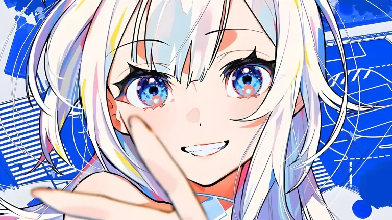
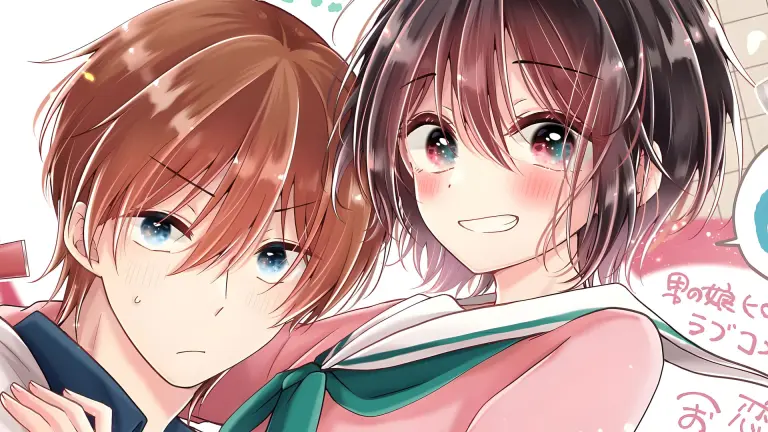
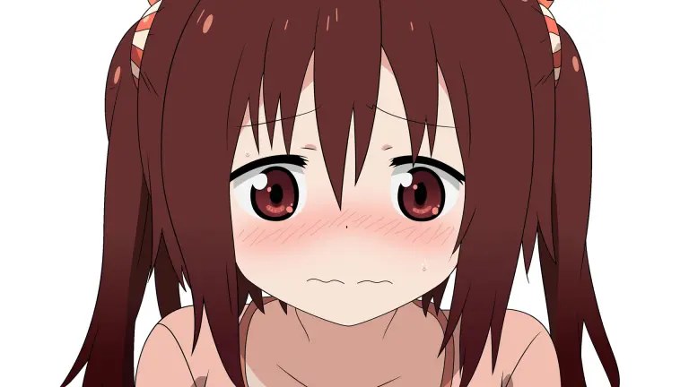

Ultimas Noticias
Gastar todo en el gacha y que de repente esas unidades sean reales en otro mundo es la fantasía que ningún jugador admite en voz alta pero todos han tenido. Gacha Girls Corps confirmó su anime con estreno programado para enero de 2027, abriendo su sitio web oficial el 25 de junio con teaser, imagen promocional, elenco y equipo de producción. El anuncio del proyecto lleva en marcha desde mayo de 2025, pero es ahora cuando se revelan los nombres concretos detrás de la adaptación.
La paz mundial resulta ser pésima para el negocio de los aldeanos que venden pociones. The Fledgling Demon Lord's Starter Shop confirmó su adaptación al anime con estreno programado para enero de 2027, abriendo su sitio web oficial el 25 de junio con teaser, imagen promocional, elenco principal y equipo de producción.
El mahjong no necesita ser competitivo para ser el centro de una historia adorable. Gokigenyo, Ikkyoku Ikaga? (Good Day to You, How About a Game?) confirmó su adaptación al anime el 25 de junio, exactamente el mismo día en que su quinto volumen recopilado llegó a las tiendas. El anuncio vino acompañado de una ilustración conmemorativa de la propia autora, Tsukasa Unohana, marcando el momento en que su manga de 4 paneles sobre mahjong y amistad en una escuela de élite da el salto a la pantalla.
La jirai-kei más tierna del manga llega un poco más tarde de lo planeado. El anime de Are You a Landmine, Chihara-san? anunció el 25 de junio su retraso a enero de 2027, sumando al mismo tiempo nuevas voces al elenco, varios miembros del equipo de producción y un proyecto musical dedicado a la protagonista que arranca antes de que el anime llegue a la pantalla.

Un proyecto que comenzó como una obra doujin independiente en 2017 acaba de dar el salto más grande de su historia. RE:BEL ROBOTICA, creado originalmente por la ilustradora Mika Pikazo, confirmó oficialmente su adaptación al anime junto a una imagen promocional recién dibujada por la propia autora que presenta a la misteriosa chica Lily sonriendo mientras extiende la mano hacia el espectador.
El hitman retirado vuelve a la acción. Sakamoto Days confirmó su segunda temporada con estreno programado para enero de 2027, y el anuncio llegó cargado: imagen promocional, teaser, cambio de director y tres nuevas incorporaciones al elenco para el JCC Infiltration Arc, el arco donde Sakamoto y Shin se meten directamente dentro de la academia de asesinos más peligrosa del mundo.

Podría haber sido cualquier otra voz. Eligieron a la misma de siempre. Mayumi Tanaka, la seiyuu que ha sido Monkey D. Luffy desde 1999, confirmó su regreso al personaje para THE ONE PIECE, el remake de la historia producido por WIT STUDIO que llegará a Netflix en febrero de 2027. A sus 71 años, la actriz admitió sentir algo de ansiedad al comenzar algo nuevo, pero describió la experiencia de grabar como disfrutable una vez que encontró nuevas formas de acercarse al personaje.

Una historia sobre maquillaje, autodescubrimiento y una amistad de infancia que evoluciona hacia algo más difícil de definir acaba de confirmar su adaptación al anime. I Think I Turned My Childhood Friend Into a Girl anunció el proyecto a través de la apertura de su cuenta oficial, acompañado de una ilustración conmemorativa dibujada por la propia autora, Azusa Banjo.

Llevar el fanatismo por un videojuego de dispositivos móviles al mundo real suele quedarse en comprar figuras, sábanas o gastar miles de dólares en el sistema gacha. Sin embargo, un jugador de Uma Musume Pretty Derby decidió romper por completo cualquier límite establecido al llevar su obsesión por las chicas caballo a la vida real, adquiriendo un caballo pura sangre auténtico para meterse de lleno en el competitivo y costoso negocio de las carreras hípicas.

Cumplir el sueño de tu vida y convertir tu obra en un fenómeno de masas debería ser el momento más feliz para cualquier artista, pero la realidad de la industria suele esconder matices sumamente complejos. El creador de la popular comedia Himouto! Umaru-chan decidió hablar con total honestidad sobre los inesperados desafíos emocionales y psicológicos que llegaron a su vida justo cuando alcanzó el éxito que tanto había perseguido como mangaka.